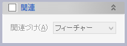
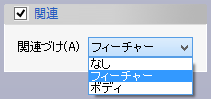

パラメータの入力が整うと軸のプレビューが表示されます。軸の確認後、OKボタンで実行します。
軸の定義の方法 以下の定義方法があります。
軸要素(方向入力)で作成します。
2平面(データム,フェイス)の交線で作成します。
軸の基準点と方向を指定して作成します。(位置入力,方向入力)
関連（オプション）   軸の定義に使用した要素の変更に追従するように関連づけます。（関連の方法）

 軸(データム)
軸(データム)